질문 → 답변 → 첨부자료
제가 실제로 기획할 때 쓰는 사고 흐름과 가장 닮아 있는 구조였습니다.
공간, 서사, 인터랙션으로 사람이 몰입하는 경험을 설계하는 콘텐츠 기획자 강민구입니다.

그래서 제 포트폴리오도 단순한 결과물 모음이 아니라, 질문하고 탐색하는 인터페이스처럼 설계했습니다. 콘텐츠 기획은 무엇을 만들었는가보다 무엇을 왜 이렇게 풀었는가가 중요하다고 생각했고, 그 사고 방식을 화면 문법으로 옮겼습니다.
제가 실제로 기획할 때 쓰는 사고 흐름과 가장 닮아 있는 구조였습니다.
단순히 예쁜 레이아웃이 아니라, 인터페이스 설계 능력까지 함께 보이도록 구성했습니다.
강민구의 기본 정보와 포트폴리오를 읽기 위한 최소한의 맥락을 한 화면에서 정리했습니다.
영상에서는 리듬과 반응의 흐름을, 희곡과 시나리오에서는 감정의 인과와 반전을, 방탈출에서는 공간과 선택의 긴장을 설계해왔습니다. 앞으로도 한 형식에 머무르기보다 경험을 중심에 두고 매체를 넘나드는 콘텐츠 기획자로 성장하고 싶습니다.
보는 흐름과 장면의 리듬을 설계합니다.
감정의 인과와 구조를 설계합니다.
공간과 선택이 작동하는 몰입 구조를 설계합니다.
사람은 어디에서 몰입하고, 왜 끝까지 따라오는가. 웹 예능에서는 시청 흐름으로, 서사에서는 감정 구조로, 방탈출에서는 공간 동선과 인터랙션으로 이 질문을 풀어왔습니다.
시선, 반응, 타이밍을 중심으로 장면의 흐름을 설계합니다.
감정의 인과와 반전 회수를 중심으로 서사 구조를 설계합니다.
공간, 동선, 선택, 긴장을 중심으로 플레이어 경험을 설계합니다.
아이디어를 구조로 정리하고 실제 결과물로 끝까지 밀어붙입니다.
툴을 많이 쓰는 것보다, 목적에 맞게 조합하는 것을 더 중요하게 생각합니다. 기획 문서화, 영상 편집, 시각 구조화, AI 보조 작업을 프로젝트 목적에 따라 선택하고 연결합니다.
Advanced
Strong
Strong
Strong
Working
Working
Working
Working
툴은 결과를 대신 만드는 수단이 아니라, 기획의 구조를 더 선명하게 구현하기 위한 보조 장치라고 생각합니다.
질문을 먼저 세우고, 구조를 정리한 다음, 문장과 화면으로 구현합니다. 그래서 결과물 이전에 문제 정의와 흐름 설계가 먼저 존재합니다.
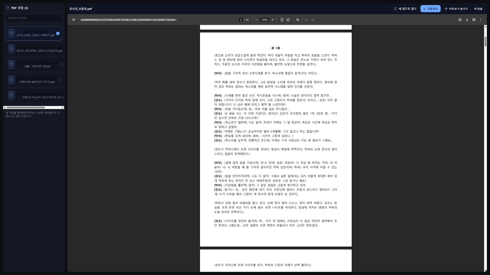
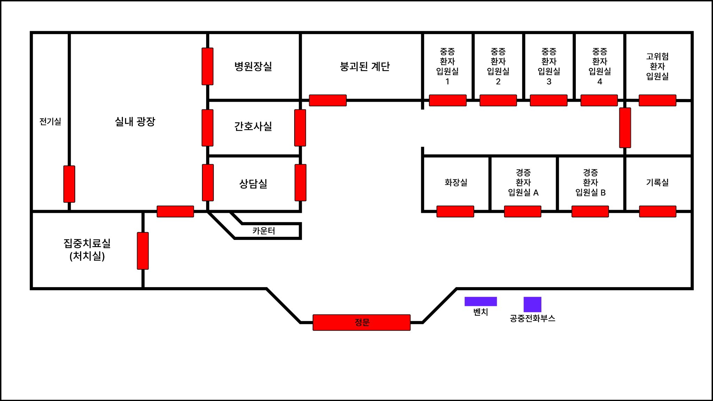
작업의 방향은 기획에서 시작하지만, 성과는 결국 결과와 반응으로 증명된다고 생각합니다. 수상은 자랑보다도 작업이 검증된 근거처럼 배치하고자 했습니다.
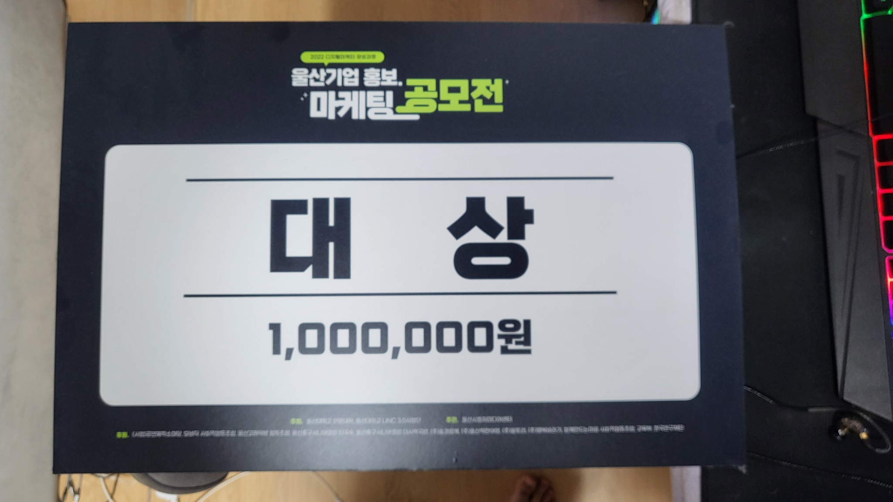
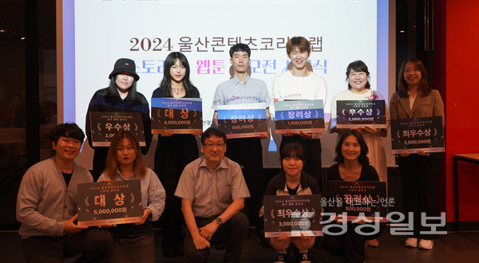
극작과 희곡 작업이 실제 공모전 수상으로 이어지며 서사 설계 능력을 증명했습니다.
영상과 홍보 콘텐츠 분야에서 기획과 제작을 함께 수행하며 완성도와 실행력을 보여주었습니다.
공간과 인터랙션을 중심으로 한 프로젝트를 통해 몰입형 경험 설계 역량을 축적해왔습니다.
성과는 자랑보다도, 작업의 방향과 구조가 실제로 설득력을 가졌는지 보여주는 외부의 응답이라고 생각합니다.
대표작과 작업군, 그리고 전체 아카이브를 하나의 구조 안에서 탐색할 수 있도록 구성했습니다.
이 프로젝트에서 제가 중요하게 본 것은 단순한 공포 연출이 아니라, 플레이어가 왜 이 공간을 의심하고 왜 다음 선택으로 이동하게 되는지를 설계하는 일이었습니다.
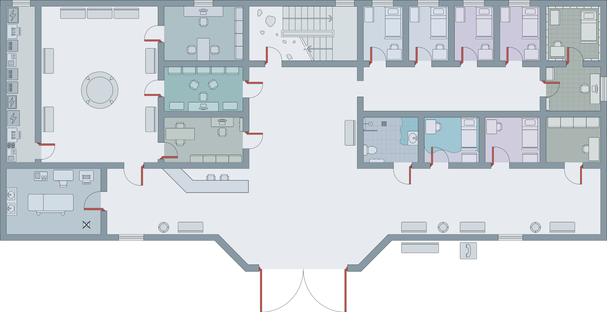
새벽, 폭우, 분실된 연락수단, 잠긴 출구라는 상황 안에서 플레이어는 이 공간을 탐색할 수밖에 없는 사람으로 배치됩니다. 그래서 공포는 갑자기 튀어나오는 장면보다, 점점 더 돌아갈 수 없게 되는 상황 속에서 커집니다.
고립의 출발점
외부와의 단절
폐쇄적 공간과 불안
길안내이자 생존 알고리즘
플레이를 강제하는 구조
서사 해석의 핵심 단서

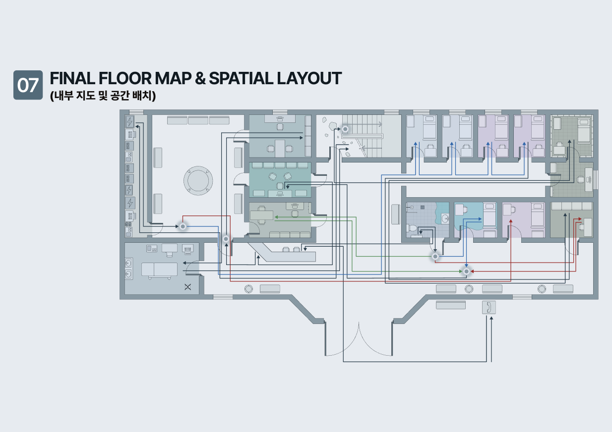
각 공간은 기능이 다릅니다. 어떤 공간은 정보를 제공하고, 어떤 공간은 긴장을 높이며, 어떤 공간은 그동안 모은 단서의 의미를 바꾸는 역할을 합니다.
정보는 한 번에 주지 않고, 공간과 도구를 통해 조금씩 해석하게 하며, 그 과정에서 감정 곡선이 자연스럽게 상승하도록 설계했습니다.
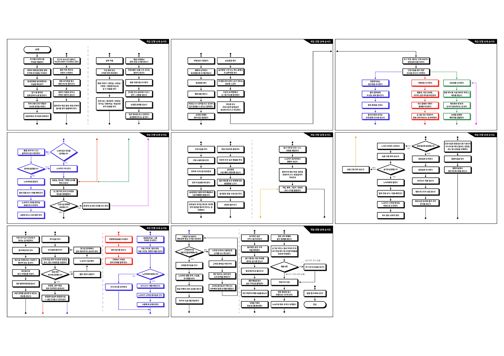
공간 탐색의 시각적 전환점
긴장을 유지시키는 제한 장치
정보 해석의 중심
결정과 결과를 연결하는 구조
Heavy Rain은 세계관 설계, 공간 구조, 플레이어 동선, 퍼즐 흐름, 감정 곡선, 선택의 결과까지 제가 중요하게 생각하는 기획 요소들이 함께 들어 있는 작업입니다.
왜 이 공간에 머물게 되는지 설명합니다.
정보와 감정을 동시에 조절합니다.
선택과 긴장이 끝까지 이어지게 만듭니다.
누가 먼저 보이고, 어떤 타이밍에 정보가 열리며, 어디서 반응이 터지고 잠깐 숨을 고르게 할지를 설계해야 장면이 기억에 남는다고 생각합니다. 그래서 감독, 기획, 촬영, 편집을 하나의 시청 경험 설계로 봅니다.
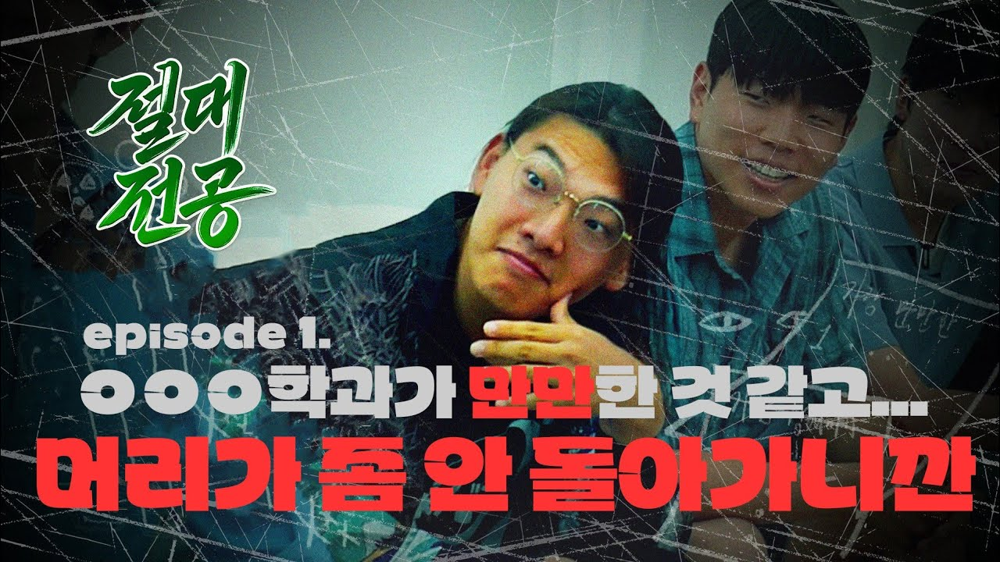
룰을 빠르게 이해시키고 반응 포인트를 선명하게 배치해 끝까지 따라오게 되는 흐름을 설계했습니다.
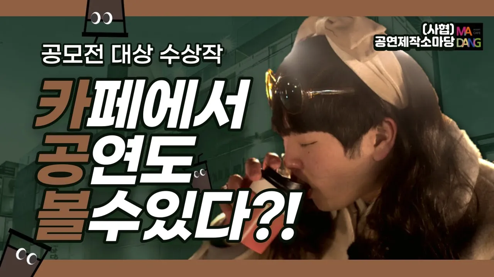
메시지가 이해되기 전에 장면이 먼저 기억되도록 컷의 기능과 연결, 타이포와 썸네일의 인상을 함께 고려했습니다.
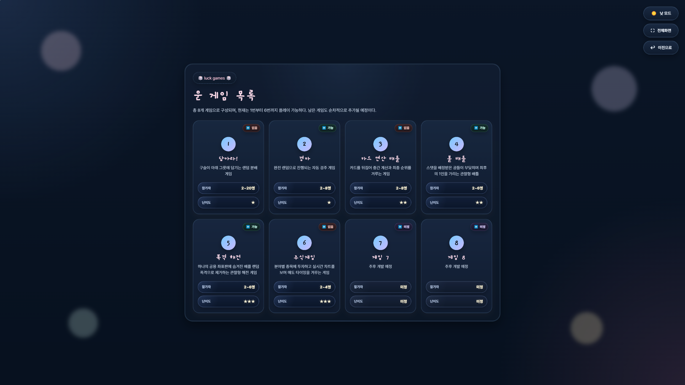
사용자의 이해와 몰입 타이밍이 이어지도록 인터랙션의 흐름, 정보 개방 순서, 카드 배치와 시각적 리듬을 설계했습니다.
무슨 일이 일어나는가보다 왜 이 말이 지금 나와야 하는가를 더 중요하게 봅니다. 감정이 폭발하는 장면이라도 그 이전에 축적된 침묵과 맥락이 있어야 하고, 반전 역시 놀라움보다 회수의 설득력이 먼저라고 생각합니다.

사회극 / 희곡 / 욕망·지역성·비극 구조
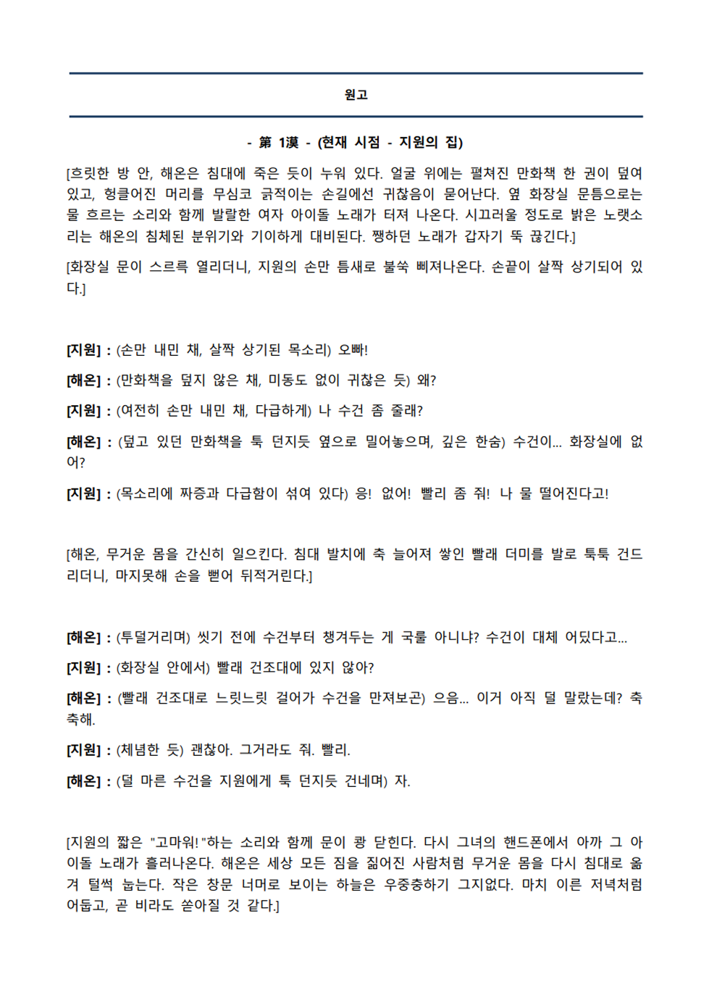
가족 드라마 / 감성 서사 / 상징극
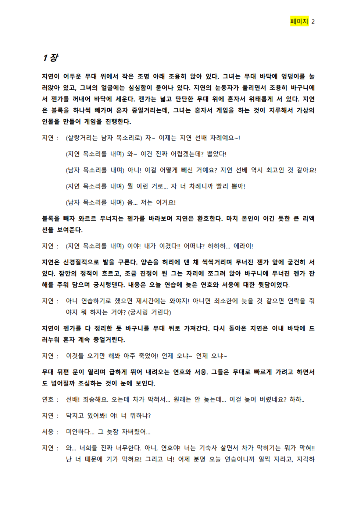
리얼리즘 드라마 / 희곡 / 세대 갈등·상실·상징
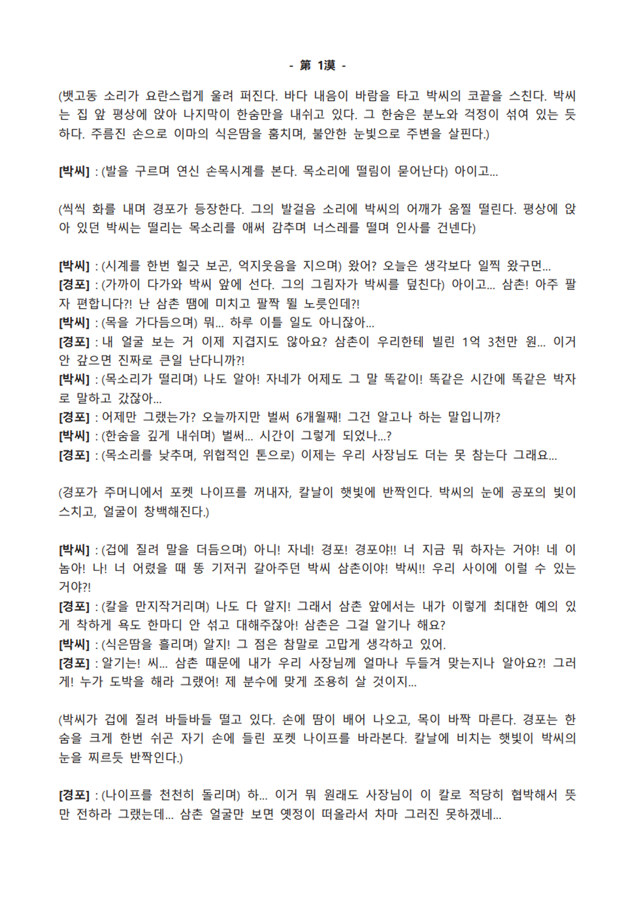
드라마 / 공포 / 비극 / 상징적 정서
사람은 어디에서 몰입하는가. 저는 이 질문을 영상에서는 시청 흐름으로, 희곡에서는 감정 구조로, 방탈출에서는 공간 경험으로 풀어왔습니다. 그래서 다양한 형식을 다룬다는 사실보다, 그 형식들을 하나의 기획 언어로 연결할 수 있다는 점을 강점으로 생각합니다.
보는 흐름과 반응의 타이밍을 설계합니다.
감정의 인과와 반전 구조를 설계합니다.
동선과 선택이 작동하는 몰입 구조를 설계합니다.
대표작과 핵심 작업 외에도, 다양한 형식의 기획과 제작 경험을 쌓아왔습니다.
많은 작업을 다뤘다는 사실보다, 그 작업들이 하나의 구조 언어로 연결된다는 점을 보여주고 싶었습니다.
웹 예능에서는 보는 흐름을, 희곡과 시나리오에서는 감정의 축적을, 방탈출에서는 공간과 선택의 긴장을 설계해왔습니다. 앞으로도 콘텐츠를 만드는 사람을 넘어, 경험이 작동하는 구조를 설계하는 콘텐츠 기획자로 성장하고자 합니다.
질문을 던지고,
사람이 몰입하는 답을 설계하겠습니다.